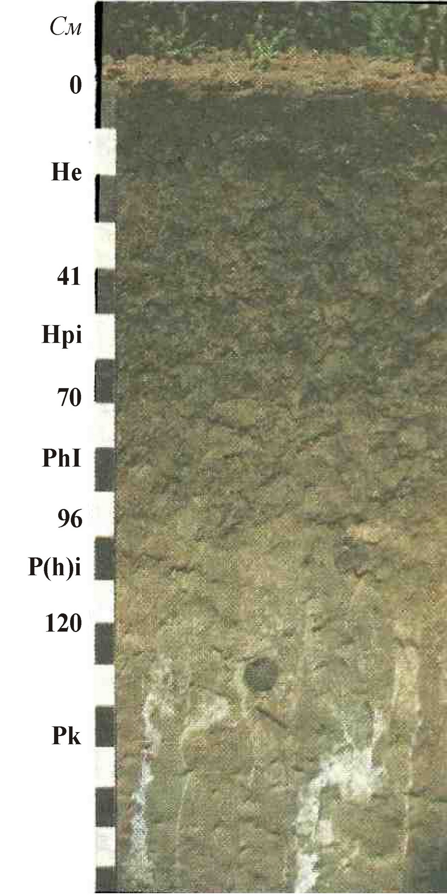
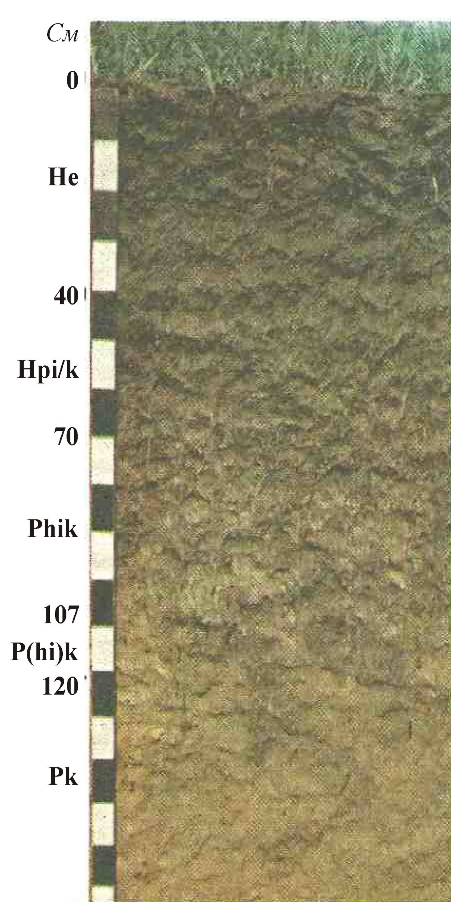
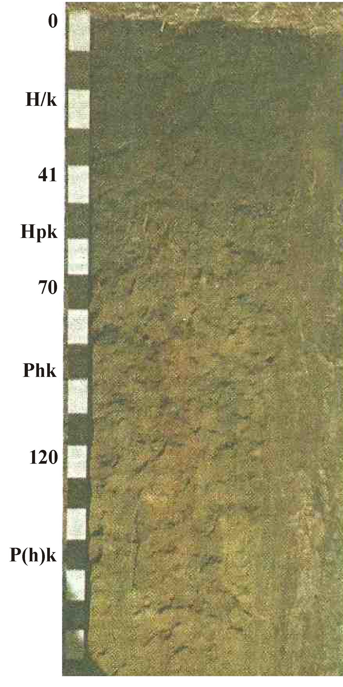
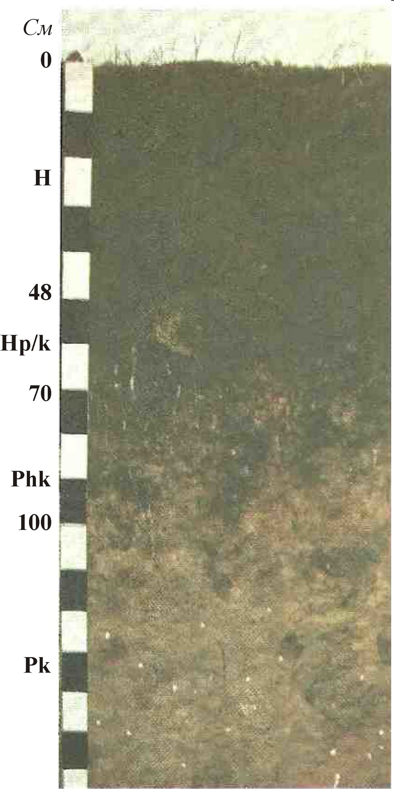
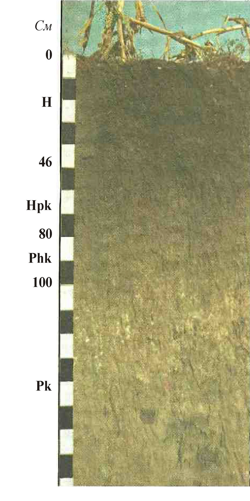
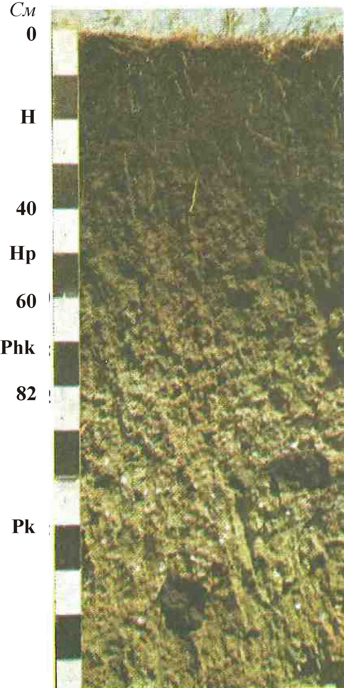
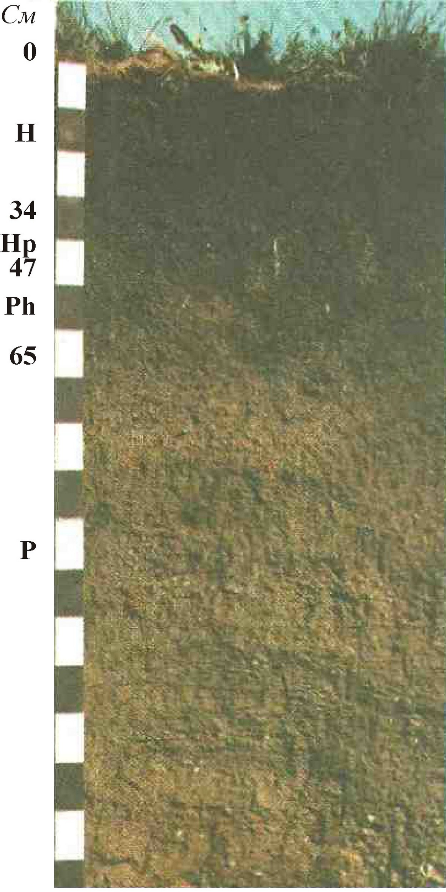
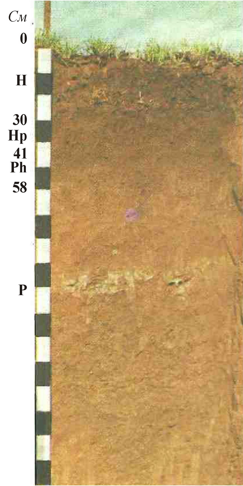
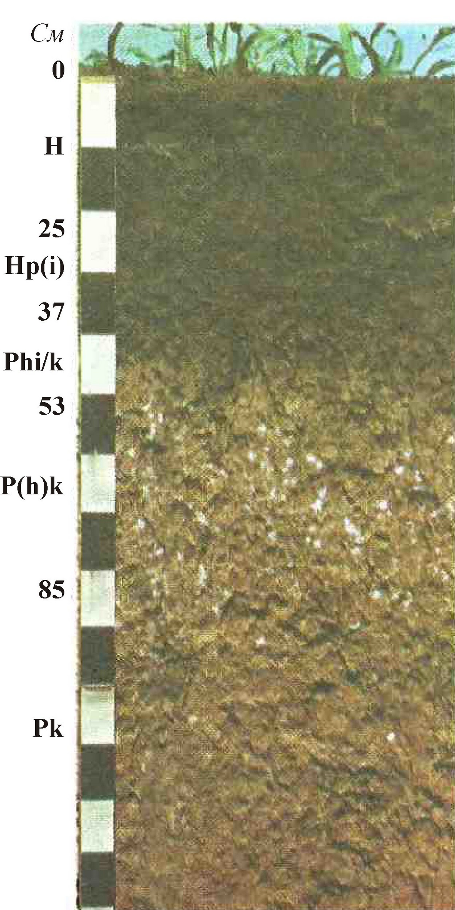

16. Чорноземи опідзолені на лесах
He
0-41 см
Гумусовий, слабоелювійований, темно-сірий, вологий, крупнопилувато-важкосуглинистий, 0-27 см – орний, пухкий, пилувато-грудкуватий, підорний – ущільнений, зернистий, грані структурних агрегатів припудрені присипкою SiO2; перехід ясний.
HpI
42-70 см
Перехідний, слабоілювійований, менше гумусований, бурувато-сірий, вологий, крупнопилувато-важкосуглинистий, ущільнений, горіховидний, на гранях структурних агрегатів помітні слабі натіки півтораоксидів, сильно переритий червами, червоточини заповнені копролітами, зустрічаються залишки коренів дерев; перехід ясний.
PhI
71-96 см
Нижній перехідний, нерівномірно гумусований, сильноілювійований; сірувато-бурий, вологий, крупнопилувато-середньосуглинистий, крупногоріхуватий, ущільнений, по гранях структурних агрегатів помітні колоїдні натіки, сильно переритий червами, зустрічаються напіврозкладені залишки коренів дерев і кротовини; перехід поступовий.
P(h)i
97-120 см
Лес, дуже слабо і нерівномірно гумусований, слабоілювійований, бурий з сіруватим відтінком, вологий, крупнопилувато-середньосуглинистий, грудкуватий, ущільнений, зустрічаються окремі дрібні бурі плями колоїдних натіків, багато кротовин і червоточин, заповнених гумусовим матеріалом; перехід різкий.
Pk
121-200 см
Лес, жовто-палевий, дуже слабогумусований (по кротовинам), крупнопилувато-середньосуглинистий, включення карбонатів у вигляді псевдоміцелію.

18. Чорнозем реградований на лесах
He
0-40 см
Гумусовий, слабоелювійований, темно-сірий, вологий, крупнопилувато-важкосуглинистий, 0-27 см – орний, пухкий, порохувато-грудкуватий, підорний – ущільнений, грудкувато-зернистий з плитчастим поділом, по граням структурних агрегатів помітна присипка SiO2; перехід поступовий.
Hpі/k
41-70 см
Верхній перехідний, залишково ілювійований, бурувато-сірий, вологий, добре гумусований, крупнопилувато-важкосуглинистий, неміцногоріховидний, ущільнений, багато червоточин, які з глибини 65 см заповнені карбонатною цвіллю, з 60 см суцільно карбонатний; перехід поступовий.
Phik
71-107 см
Нижній перехідний, слабогумусований, залишково ілювійований, сірувато-бурий, вологий, крупнопилувато-важкосуглинистий, неміцнокрупногоріхуватий, ущільнений, багато кротовин і червоточин з карбонатною цвіллю; перехід ясний.
P(hi)k
108-120 см
Лес, брудно-палевий, вологий, слабкогумусований, крупнопилувато-важкосуглинистий, неміцногрудкуватий, ущільнений, багато кротовин і червоточин з карбонатною цвіллю; перехід поступовий.
Pk
121-200 см
Лес, бруднувато-палевий, вологий, крупнопилувато-легкоглинистий, по кротовинам і червоточинам слабкогумусований, багато карбонатної цвілі.

19. Чорнозем типовий глибокий малогумусний на лесах
H/k
0-41 см
Гумусовий, темно-сірий, вологий, крупнопилувато-важкосуглинистий, 0-27 см – орний, порохувато-грудкуватий, пухкий, 27-41 см - підорний – карбонатний, неміцнозернисто-грудкуватий, ущільнений; перехід поступовий.
Hpk
42-70 см
Верхній перехідний, добре, але нерівномірно гумусований, карбонатний, темно-сірий, вологий, крупнопилувато-середньосуглинистий, неміцнозернисто-грудкуватий, пухкий, по червоточинам зустрічається карбонатна цвіль; перехід поступовий.
Phk
71-120 см
Нижній перехідний, слабо і нерівномірно гумусований, карбонатний, сіро-бурий, вологий, крупнопилувато-середньосуглинистий, неміцногрудкуватий, багато кротовин і червоточин з карбонатною цвіллю; перехід поступовий.
P(h)k
121-203 см
Лес, по кротовинам слабкогумусований, карбонатний, сірувато-бурий, плямистий, свіжий, крупнопилувато-середньосуглинистий, грудкуватий, пухкий, сильно переритий землериями, по кротовинам и червоточинам багато карбонатної цвілі.
Pk
204-220 см
Лес, карбонатний, бруднувато-палевий, крупнопилувато-середньосуглинистий з рясною карбонатною цвіллю.

20. Чорнозем типовий вологий глибокий малогумусний на лесовидних суглинках
H/k
0-44 см
Гумусовий, темно-сірий, вологий, крупнопилувато-важкосуглинистий, 0-26 см – орний, порохувато-дрібнозернистогрудкуватий, ущільнений, густо пронизаний коренями, 26-44 см - підорний – карбонатний, зернисто-дрібногрудкуватий, ущільнений, багато коренів; перехід поступовий.
Hpk
45-80(85)см
Верхній перехідний, добре і нерівномірно гумусований, карбонатний, темно-сірий, з буруватим відтінком, вологий, крупнопилувато-середньосуглинистий, неміцнозернисто-дрібногрудкуватий, слабоущільнений, зустрічаються поодинокі кротовини, багато червоточин і копролітів, червоточини і ходи коренів часто заповнені карбонатною цвіллю; перехід поступовий.
Phk
81/86-115(145) см
Нижній перехідний, нерівномірно і слабко гумусований, карбонатний, сіро-бурий, сильно плямистий від значної кількості кротовин і червоточин, свіжий, крупнопилувато-середньосуглинистий, зернистогрудкуватий, слабкоущільнений, по ходам коренів і червоточин багато карбонатної цвілі, зустрічаються поодинокі корені, перехід поступовий.
P(h)k
116(146)-160 см
Карбонатний лесовидний суглинок, брудно-бурий, дуже плямистий, сильно переритий землериями, крупнопилувато-середньосуглинистий, крупногрудкуватий з слабким горизонтальним поділом; по червоточинам, кротовинам і граням структурних агрегатів багато карбонатної цвілі, перехід поступовий.
Pk/gl
161-210 см
Карбонатний лесовидний суглинок, сизувато-палевий з великою кількістю іржаво-бурих плям, особливо на гранях структурних агрегатів; крупнопилувато-середньосуглинистий, грубоплитчастий, щільний, в нижній частині глеюватий, слабков’язкий, карбонати у вигляді рідких журавчиків, стрижнів і рясних білуватих налетів по гранях структурних агрегатів.

21. Чорнозем типовий глибокий середньогумусний на лесах
H/k
0-43 см
Гумусовий, темно-сірий, свіжий, легкоглинистий; 0-25 см – орний, зернисто-грудкуватий; 25-43 см - підорний – карбонатний, зернистий; перехід поступовий.
Hpk
44-70 см
Верхній перехідний, добре гумусований, карбонатний, темно-сірий, з буруватим відтінком, свіжий, важкосуглинистий, зернисто-грудкуватий, ущільнений, по червоточинам рясна карбонатна мука; перехід поступовий.
Phk
71-114 см
Нижній перехідний, слабко і нерівномірно гумусований, карбонатний, бурувато-сірий, свіжий, важкосуглинистий, зернистогрудкуватий, ущільнений, переритий землериями, ходи котрих з карбонатною цвіллю; перехід поступовий.
P(h)k
115-133 см
Лес брудно-бурий, плямистий, важкосуглинистий, сильно переритий землериями та припудрений карбонатною мукою.
Pk
134-190 см
Лес бурувато-палевий, легкоглинистий, з рясною карбонатною цвіллю.

34. Чорнозем звичайний глибокий середньогумусний на лесах
H
0-48 см
Гумусовий, темно-сірий, вологий, легко глинистий; 0-28 см – орний, пилувато-грудкуватий, пухкий; підорний – зернистий, з багатьма червоточинами, поодинокі кротовини, перехід поступовий.
Hp/k
49-70(80) см
Верхній перехідний, добре гумусований, темно-сірий зі слабким буруватим відтінком, вологий, легкоглинистий, грудкувато-зернистий, ущільнений, пористий, багато червоточин та копролітів, поодинокі кротовини, в нижній частині по слідах коренів карбонатна цвіль, кипить від HCl з глибини 62 см; перехід поступовий.
Phk
71(81)-100(110) см
Нижній перехідний, карбонатний, темно-бурий, вологий, легко глинистий, грубувато-зернисто-горіховидний, ущільнений, сильно переритий землериями, по слідам коренів, червоточинам і структурним агрегатам багато карбонатної цвілі, перехід поступовий.
Pk
101(111)-180 см
Лес, до 150 см плямистий від великої кількості кротовин, донизу палевий, легко глинистий, ущільнений, пористий, з глибини 140 см рідка карбонатна присипка, слабкий міцелій та прожилки.

35. Чорнозем звичайний глибокий слабкогумусований на лесах
H
0-46 см
Гумусовий, темно-сірий, свіжий, добре гумусований, легкоглинистий; 0-28 см – орний, пилувато-грудкуватий, пухкий; підорний – грудкувато-дрібнозернистий, ущільнений, перехід поступовий.
Hpk
47-80 см
Верхній перехідний, темнувато-сірий, свіжий, легкоглинистий, грудкувато-зернистий, ущільнений, зустрічається карбонатний міцелій; перехід помітний.
Phk
81-100 см
Нижній перехідний, темно-бурий, плямистий, свіжий, легкоглинистий, грудкувато-крупнозернистий, ущільнений, зустрічається карбонатний міцелій, багато кротовин; перехід поступовий.
Pk
101-200 см
Лес палевий, свіжий, важкосуглинистий, щільний, тонкопористий, на глибині 107-160 см виділяється горизонт максимального скупчення карбонатів у вигляді білозірки та міцелію, по всьому горизонту марганцева пунктуація, часто зустрічаються кротовини, заповнені гумусованим матеріалом.

36. Чорнозем звичайний середньоглибокий слабкогумусований на лесах
H
0-40 см
Гумусовий, темно-сірий, свіжий, легкоглинистий, дрібногрудкуквато-зернистий, ноздрювато-пористий, пухкий, дуже переритий червами та комахами, багато копролітів, пронизаний коренями рослин; перехід поступовий.
Hp
41-60 см
Верхній перехідний, темно-сірий, з буруватим відтінком, свіжий, легкоглинистий, грудкувато-зернистий, ущільнений, пористий, зустрічаються кротовини; перехід поступовий.
Phk
61-82 см
Нижній перехідний, темно-бурий, свіжий, легкоглинистий, грудкуватий, ущільнений, тріщінувато-тонкопористий, зустрічаються кротовини, з глибини 64 см карбонатний; перехід поступовий.
Pk
83-170 см
Лес палевий, свіжий, в верхній частині слабко- та нерівномірно гумусований, легкоглинистий, щільний, пористий, на глибині 90-130 см зустрічається рихла білозірка.

37. Чорнозем на елювії глинистих сланців
H
0-34 см
Гумусовий, темно-сірий, добре гумусований, свіжий, легкоглинистий, слабкощебнистий, грудкувато-зернистий, брилисто-грудкуватий, ущільнений; перехід поступовий.
Hp
35-47 см
Верхній перехідний, темно-сірий, свіжий, легкоглинистий, слабкощебнистий, зернистий, ущільнений; перехід поступовий.
Ph
48-65 см
Нижній перехідний, темнувато-сірий, плямистий, свіжий, легкоглинистий, середньощебнистий, грудкувато-зернистий, щільний; перехід різкий.
P
66-160 см
Елювій глинистого сланцю, темнувато-сірий, хрящево-щебенистий, шаруватий, щільний.

38. Чорнозем на елювії піщанистих сланців
H
0-32 см
Гумусовий, темнувато-сірий, свіжий, середньоглинистий, слабкощебенистий, грудкуватий, ущільнений; перехід поступовий.
Hp
33-44 см
Верхній перехідний, темнувато-сірий з буруватим відтінком, свіжий, легкосуглинистий, сильнощебенистий, грудкувато-зернистий, ущільнений; перехід поступовий.
Ph
45-60(65) см
Нижній перехідний, темнувато-сірий, буруватий, свіжий, супіщаний, сильнощебнистий, ущільнений; перехід різкий.
P
66-130 см
Піщанистий сланець, сірий, пластичний, внизу грубопластичний.

39. Чорнозем на елювії пісковиків
H
0-31 см
Гумусовий, темнувато-сірий, свіжий, важкосуглинковий, слабко щебенистий, грудкуватий, ущільнений, перехід ясний
Hp
32-42 см
Верхній перехідний, темнувато-сірий, з буруватим відтінком, свіжий, вологий, важкосуглинковий, слабкощебенистий, зернисто-грудкуватий, ущільнений; перехід ясний.
Ph
43-50 (56) см
Нижній перехідний, темнувато-бурий, плямистий, вологий, важкосуглинковий, слабкощебенистий, грудкуватий, ущільнений; перехід різкий.
P
51(57)-140 см
Пісковик, сірий, дрібнозернистий, плитчатий, зверху дрібноуламковий.

40. Чорнозем на червоноколірній глині
H
0-30 см
Гумусовий, темно-сірий з червоний відтінком, свіжий, середньоглинистий, зернистогрудкуватий, пухкий в орному шарі; горіховидний, щільний в підорному; перехід поступовий
Hp
31-41 см
Верхній перехідний, темнувато-сірий, червонуватий, свіжий, середньоглинистий, крупнозернисто-горіховидний, щільний; перехід поступовий.
Ph
42-58 см
Нижній перехідний, червонувато-бурий, плямистий, свіжий, важкоглинистий, крупногоріхувато-призмовидний, щільний; перехід поступовий.
P
59-200 см
Глина червоноколірна (пермська), щільна, розпадається на добре огранені плитки, на глибині 95-103 см шар щільного плитчатого піщаника.

41. Чорнозем сильносолонцюватий солончаковий на засолених палеогенових глинах
Hd
0-23 см
Гумусовий, темнувато-сірий, легкоглинистий, крупно-стобчастно-брилистий, в сухому стані і в’язкий, липкий, сильно набухаючий у вологому; перехід поступовий
Hp/s
24-41 см
Верхній перехідний, темно-сірий, з брудно-зеленуватим відтінком, свіжий, легкоглинистий, крупнобрилистий, брили дуже щільні і злиті, тріщинуватий, в нижній частині зустрічається гіпс у вигляді крупних і дрібних листуватих кристалів, останні зібрані у гнізда; перехід поступовий.
Phs
42-75 см
Нижній перехідний,нерівномірно і слабко гумусований, засолений, зеленувато-жовтий, з рясними іржаво-бурими плямами, вологий, легкоглинистий, грудкувато-призмовидно-брилистий, щільний, з великою кількістю крупнокристалічного гіпсу; перехід постуопвий.
Pks
76-170 см
Глина, карбонатна, засолена до 100 см, брудно-жовтувато-зелена, в’язка, щільна, нижче легко розпадається на горіхуваті та листуваті агрегати, поверхня яких має буро-чорний коріл.

42. Чорнозем короткопрофільний на елювії глинистих сланців
H
0-19 см
Гумусовий, темно-сірий, свіжий, важкосуглинистий, слабкощебенистий, грудкувато-зернистий, ущільнений; перехід поступовий.
HP
20-30(34) см
Перехідний, темно-бурий, свіжий, легкоглинистий, слабкокам’янистий, щільний; перехід різкий.
P
31(35)-160 см
Сланець глинистий, темно-сірий, пластинчастий, рихло складений.

43. Чорнозем короткопрофільний на елювії піщанистих сланців
H
0-22 см
Гумусовий, темнувато-сірий, свіжий, легкосуглинистий, сильнощебнистий, грудкуватий, ущільнений; перехід поступовий.
HP
23-35(40) см
Перехідний, темнувато-сірий, з буруватим відтінком, свіжий, легкосуглинистий, сильнощебенистий, грудкуватий,ущільнений; перехід різкий.
P
36(41)-180 см
Піщанистий сланець, сірий, пластинчастий, в верхній частині пухкий, в нижній – щільний.

44. Чорнозем південний на лесах
Hn
0-25 см
Гумусовий, орний, темно-сірий, вологий, легко глинистий, грудкувато-пороховидний, пухкий; перехід різкий.
Hp(і)
26-37 см
Верхній перехідний, темно-сірий з коричневатим відтінком, свіжий, легкоглинистий, грудкувато-горіхувато-зернистий, ущільнений, пористий; перехід поступовий.
Phі/k
38-53 см
Нижній перехідний, темно-бурий, свіжий, легкоглинистий, грудкувато-призмовидний, ущільнений, пористий, з глибини 45 см карбонатний; перехід поступовий.
P(h)k
54-85 см
Лес зі слабкими затіками по структурним агрегатам, гумусований, бурувато-палевий, з рясною рихлою білозіркою, легко глинистий, ущільнений, грудкуватий; перехід поступовий.
Pk
86-180 см
Лес, палевий, легкоглинистий, пористий, крупногрудкуватий, щільний.

45. Чорнозем південний міцелярно-карбонатний на лесах
H(k)n
0-28(30) см
Гумусовий, темно-сірий, зі слабким каштановим відтінком, легко глинистий, зверху порохувато-грудкуватий, пухкий, свіжий, донизу брилистий, щільний, сухий тріщинуватий, по граням структурних агрегатів і тріщинам помітна карбонатна цвіль; перехід різкий по плужній підошві.
Hpk
29(31)-44 см
Верхній перехідний, карбонатний, темно-сірий з каштановим відтінком, свіжий, легкоглинистий, грудкувато-зернистий, пухкий, пористий, багато червоточин, копролітів і особливо карбонатного міцелію; перехід поступовий.
Phk
45-53(56) см
Нижній перехідний, карбонатний, темнувато-бурий, свіжий, слабогумусований, легкоглинистий, грудкуватий, пухкий, пористий, багато кротовин, червоточин і копролітів, в верхній частині карбонати у вигляді міцелію, в нижній – білозірки; перехід поступовий.
Pk
54(57)-180 см
Лес, палево-жовтий, легкоглинистий, грудкуватий, пухкий, зустрічаються кротовини, червоточини і копроліти, до глибини 110 см багато білозірки, в нижній частині – включення великої кількості гіпсу у вигляді друз і дрібнокристалічних скупчень.

61. Чорнозем звичайний міцелярно-карбонатний передгірський на давньому глинистому делювії
Hk
0-38 см
Гумусовий, темно-cірий, свіжий, легкоглинистий, слабкохрящуватий, 0-25 см - орний, горіхувато-крупногрудкуватий, злитий, щільний, підорний - грудкувато-крупнозернистий, ущільнений, карбонатний, густо принизаний коренями; перехід поступовий.
Hpk
39-61 см
Верхній перехідний, темно-сірий, з каштановим відтінком, свіжий, легкоглинистий, слабкохрящуватий, зернистий, пухкий, ноздрювато-пористий, сильно переритий червами, в нижній частині зустрічається карбонтаний міцелій; перехід поступовий.
Phk
62-75 см
Нижній, перехідний, порівняно слабкогумусований, темно-бурий з червонуватими та білуватими від великої кількості канбонатного міцелію відтінками, свіжий, легкоглинистий, середньохрящуватий, грудкувато-зернистий, пухкий, пористий, багато включень гальки та уламків щільних порід, густо пронизаний коренями; перехід поступовий
Pk
76-170 см
Делювій древніх глин, червонувато-бурий, з білуватим від великої кількості карбонатного міцелію відтінком, глибше 100 см буро-черовнуватий, легкоглинистий, слабкохрящуватий, пухкий, пористий, багато скупчень карбонатів, гальки та уламків щільних порід.